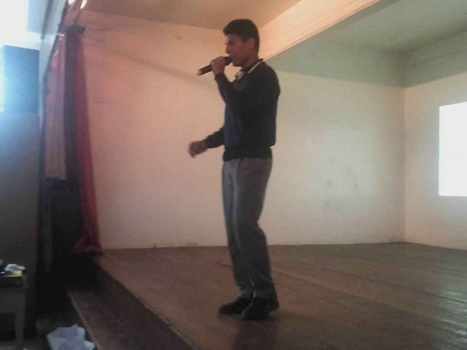
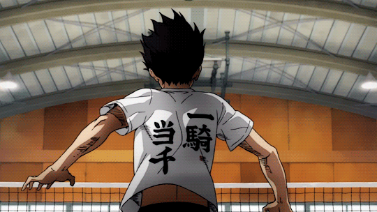

Hola, soy Franco

Acerca de mi
Soy un estudiante, actualmente me encuentro en codo a codo, y participo en la Universidad Nacional General Sarmiento como estudiante de la carrera tecnicatura universitaria de informática, me gustan los deportes, preferentemente voley y crossfit.
Mis mascotas
Me encuentro actualmente con 3 perros entre sus nombres cuales son Nani, Lila, Lolita y dos gatas, nombres como Princesa y Sheruza.
Pasos para recibir en voley
- Posicionarse firmemente en el piso y bajar la cintura.
- Encoger hombros.
- Extender los brazos.
- posicionar manos en forma de V.
- Apuntar de frente siempre en la dirección que queramos apuntar.
- y Recibir.
